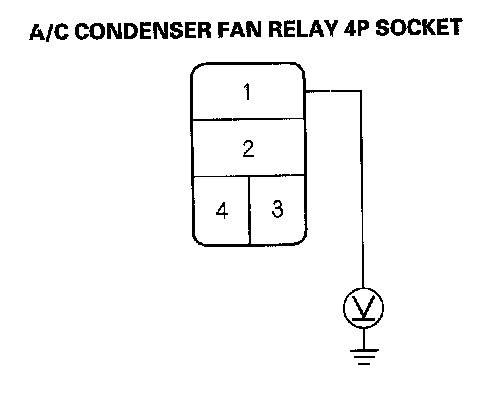
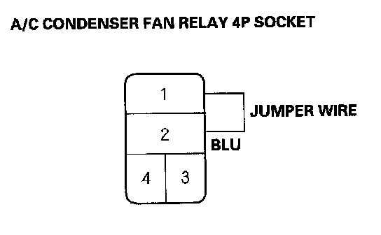
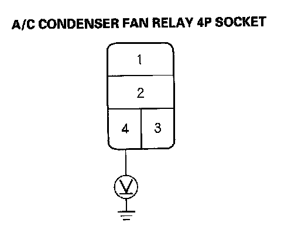
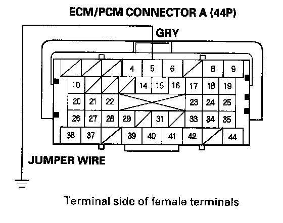
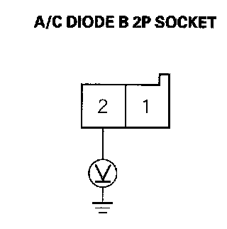
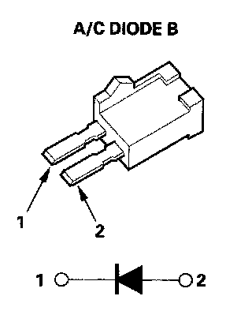

A/C Condenser Fan High Speed Circuit Troubleshooting
A/C Condenser Fan High Speed Circuit TroubleshootingNOTE:
- Do not use this troubleshooting procedure if the A/C compressor is inoperative. Refer to the symptom troubleshooting index.
- Before performing symptom troubleshooting, check for powertrain DTCs, R18A1 engine. K20Z3 engine.
1. Check the No.6 (20 A) and No. 15 (7.5 A) fuses in the under-hood fuse/relay box.
Are the fuses OK?
YES - Go to step 2.
NO - Replace the fuses, and recheck. If the fuses blow again, check for a short in the No.6 (20 A) and No. 15 (7.5 A) fuses circuit.
2. Remove the A/C condenser fan relay from the under-hood fuse/relay box, and test it.
Is the relay OK?
YES - Go to step 3.
NO - Replace the A/C condenser fan relay.

3. Measure the voltage between the A/C condenser fan relay 4P socket terminal No.1 and body ground.
Is there battery voltage?
YES - Go to step 4.
NO - Replace the under-hood fuse/relay box.

4. Connect the A/C condenser fan relay 4P socket terminals No.1 and No.2 with a jumper wire.
Does the A/C condenser fan run on high?
YES - Go to step 5.
NO - Replace the under-hood fuse/relay box.
5. Disconnect the jumper wire.
6. Turn the ignition switch ON (II).

7. Measure the voltage between the A/C condenser fan relay 4P socket terminal No.4 and body ground.
Is there battery voltage?
YES - Go to step 8.
NO - Go to step 14.
8. Turn the ignition switch OFF.
9. Reinstall the A/C condenser fan relay.
10. Jump the SCS line with the HDS.
NOTE: This step must be done to protect the engine control module (ECM)/powertrain control module (PCM) from damage.
11. Disconnect ECM/PCM connector A (44P).

12. Connect the ECM/PCM connector A (44P) terminal No.5 to body ground with a jumper wire.
13. Turn the ignition switch ON (II).
Does the Ale condenser fan run on high?
YES - Check for loose wires or poor connections at ECM/PCM connector A (44P) terminal No.5. If the connections are good, substitute a known-good ECM/PCM, and recheck. If the symptom/indication goes away, replace the original ECM/PCM, R18A1 engine, K20Z3 engine.
NO - Repair open in the wire between the A/C condenser fan relay and the ECM/PCM.
14. Remove A/C diode B from the under-hood fuse/relay box.
15. Turn the ignition switch ON (II).

16. Measure the voltage between the A/C diode B 2P socket terminal No.2 and body ground.
Is there battery voltage?
YES - Go to step 17.
NO - Replace the under-hood fuse/relay box.

17. Using the diode setting (-|<-) on a DVOM, check for current flow in both directions between the A/C diode B terminals No.1 and No.2.
Is there current flow in only one direction?
YES - Replace the under-hood fuse/relay box.
NO - Replace A/C diode B.